History · Advanced (Snapshots, LUT export, 언어 · Language, problem reports)
Applying to multiple photos at once
Lightroom batch rendering
Keyboard shortcuts
FAQ · Troubleshooting
1. Installation
Quit Photoshop and Lightroom Classic. (Save any open documents first.)
Open ChiyoFilm-2.0.0.pkg (about 224 MB, as it includes the learned models). The package is unsigned, so if macOS blocks it, right-click › Open it in Finder, or go to System Settings › Privacy & Security › Open Anyway.
The installer puts everything in place in one go:
The editor app: /Applications/Chiyo Film.app
The Photoshop plug-in (Plugins › Chiyo Film) — installed through the Creative Cloud app
You can install straight over an earlier version. Your presets, favorites and edit history are kept, and edits and presets saved in 1.x open and render as before. 2.0.0 is a beta: please tell us if you see problems in Photoshop or Lightroom.
To uninstall, run this in Terminal: sudo "/Library/Application Support/Chiyo Film/2.0.0/uninstall.sh"
Lightroom Classic setup (once)
To send photos from Lightroom, register Chiyo Film as the additional external editor and save it as a preset.
In Lightroom Classic choose Lightroom Classic › Settings… (⌘,) — “Preferences” in older versions.
Click the External Editing tab at the top. Not the “Presets” tab — the names are easy to mix up.
Leave “Edit in Adobe Photoshop” at the top as it is. In the Additional External Editor area below:
Color Space: ProPhoto RGB (or Adobe RGB if that's what you use)
Bit Depth: 16 bits/component
Resolution and compression: leave them
Open the “Preset:” menu on the first line of that same area (it shows “Custom”) and choose Save Current Settings as New Preset…; name it Chiyo Film. Set step 3 first so the preset holds those settings.
Close the window. Right-click a photo › Edit In › Chiyo Film (⌥⌘E) is there now.
Lightroom Classic › Settings (Preferences)
General · Presets · ① External Editing · File Handling …
Edit in Adobe Photoshop (leave it)
Additional External Editor
Preset:④ Custom ⌄→ Save Current Settings as New Preset… → Chiyo Film
Application:Chiyo Film.app② Choose…
File Format:③ TIFF ⌄
Color Space:③ ProPhoto RGB ⌄
Bit Depth:③ 16 bits/component ⌄
Steps ① to ④ in order. The preset menu is at the top of this area, not on the “Presets” tab.
Check: the Chiyo Film app's Help › Getting started, step 2 “Lightroom · Photoshop check”, shows whether the external editor is registered and the plug-ins are installed. Lightroom (the cloud version) has no external editing; only Classic works.
Photoshop plug-in
After installing, Plugins › Chiyo Film › Open Chiyo Film Editor is in the menu — a menu command, not a panel. Photoshop 2025 or later. If it's missing, see “Chiyo Film isn't in Photoshop's Plugins menu” in chapter 21.
2. Opening photos
Lightroom Classic (external editing)
Select a photo and choose right-click › Edit In › Chiyo Film (⌥⌘E).
Choose “Edit a Copy with Lightroom Adjustments” and click Edit.
Make your edits, then click Apply (Return). The copy is saved and appears right next to the original in Lightroom.
Tip — RAW photos: If you use Lightroom, you can still set exposure and white balance there first and send the photo over. Without Lightroom, open RAW files in the photo library (chapter 3) and start with RAW Development.
Photoshop
Open a photo and choose Plugins › Chiyo Film › Open Chiyo Film Editor.
The first time, Photoshop shows a Permission request (“Chiyo Film plugin wants to open: chiyofilm://…”). This is Photoshop’s security check and is expected. Check “Remember my choice” and click Allow so it doesn’t ask again (without the check it asks every time). “Block” keeps the editor from opening; run the menu command again and allow it.
When you apply, a “Chiyo Film · film name” layer is added at the top. One Undo removes it, and when you open the editor again it uses the photo without the earlier Chiyo layer, so effects never stack.
Supported: RGB 8/16-bit, sRGB · Display P3 · Adobe RGB · ProPhoto RGB. CMYK, HDR and transparent canvases are not supported.
Opening on its own
Drag a JPEG, TIFF or PSD file onto Chiyo Film.app to open it. Applying saves to the same file. Photos with transparent areas are opened over a white background.
3. Photo library (new in 1.7)
Without Lightroom you can open a folder, cull, develop RAW, finish like film and export. There is no catalogue: edits and ratings save automatically in a name.ext.chiyo file next to each photo. The original files are never changed.
Open Chiyo Film.app to see the start screen. Click Open Folder (⌘O) or drop a folder on the window. Subfolders are read too.
Switch views with the tabs at the top: Grid (G) · Loupe (E, one large photo) · Compare (C, 2 or 4) · Auto Cull · Edit (Enter).
The grid is split by capture date; the slider at the bottom sets the thumbnail size and the top right sets the order (capture time · file name · rating).
Culling (ratings · flags · colour labels)
Key
Action
Key
Action
1–5 / 0
Rating / clear
P · H · X · U
Pick · Hold · Reject · Unflag
6–9, ⇧6
Colour label (red · yellow · green · blue · purple)
←→
Previous · next photo
Space
Fit ↔ 100%
R
View the RAW decode
⌘Z
Undo culling
?
All shortcuts
With Auto advance on, flagging moves to the next photo (⇧+P/X does the opposite). RAW ratings and labels also go to .xmp so Lightroom and Bridge can read them.
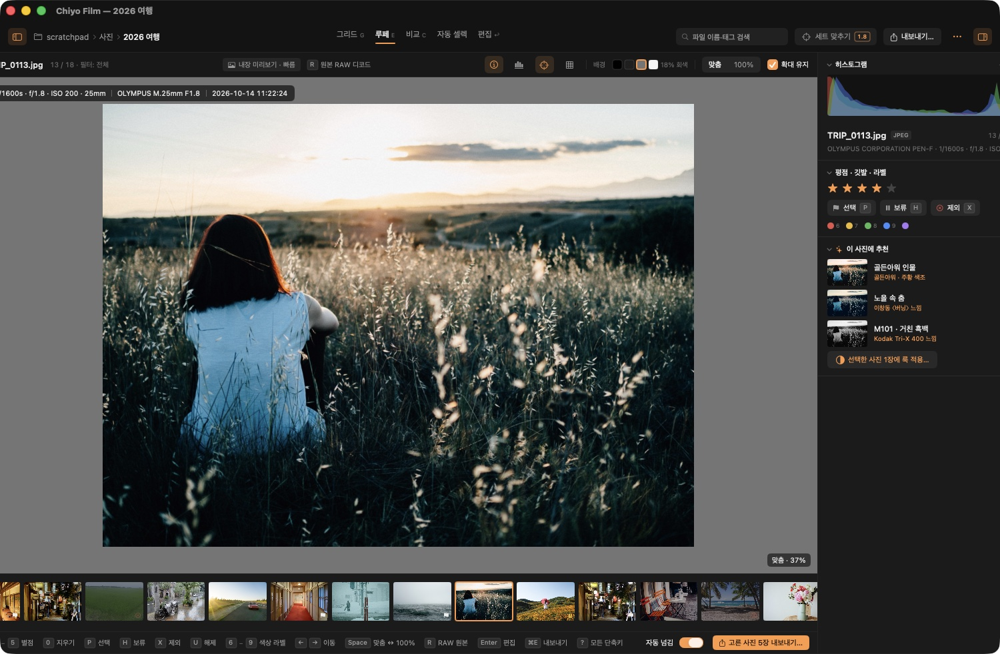
Loupe: capture info, filmstrip, key hints and ‘Export N picks…’ at the bottom right
Selecting several · filters · smart collections
Click selects one, ⌘-click adds or removes, ⇧-click selects a range, ⌘A selects all — in the grid, the loupe and the editor's filmstrip.
Filter bar: rating · flag · colour label · edited / unedited · file type · blurry · eyes closed · out of focus · burst · best. The search field finds file names and tags.
Smart collections on the left: Edited · 4 stars & up · Picks · Possibly blurry · Eyes closed · Burst groups.
Auto-cull help
After a folder opens, photos are analysed in the background: bursts are grouped with a suggested best shot, and blur, missed focus, closed eyes and exposure are flagged. In the Auto Cull tab, per group: A accept · S skip · B make this the best. Suggestions never change flags you set yourself.
RAW Development
RAW photos get a RAW row at the top of the Adjust menu and a RAW Development section under Basic in its detailed view (exposure · white balance · highlight recovery · shadows · noise…). macOS's RAW engine develops them, keeping up to about 2 stops above white so Highlights and Whites can bring back blown skies.
RAW opens at screen size first and the full resolution follows. Hold Space to see the photo before editing (including RAW Development).
Sony A7 V · A7R VI Compressed RAW 2 is converted once in the background to a DNG with the bundled LibRaw (the original stays untouched).
RAW+JPG pairs show as two photos by default; Library Settings can group them as one. Grouped, RAW · JPG at the top of the editor picks which file you edit (each keeps its own edit).
Right-click menus
Photos: Open in Editor · View in Loupe · Compare side by side · flags · rating · colour label · Create virtual copy · Sync edit · Apply previous edit · Apply look · Copy / Paste edit · Clear edit · Export · Copy / move originals · Select (all · none · invert · picks · edited) · Show in Finder · Copy file name. Right-clicking a photo outside the selection acts on it alone.
Folders: Show only this folder · Select all · Export this folder · Reload · Show in Finder · Copy path · Remove from recent folders. Smart collections: Show · Select all · Export these photos.
Same edit on many photos (sync · virtual copies)
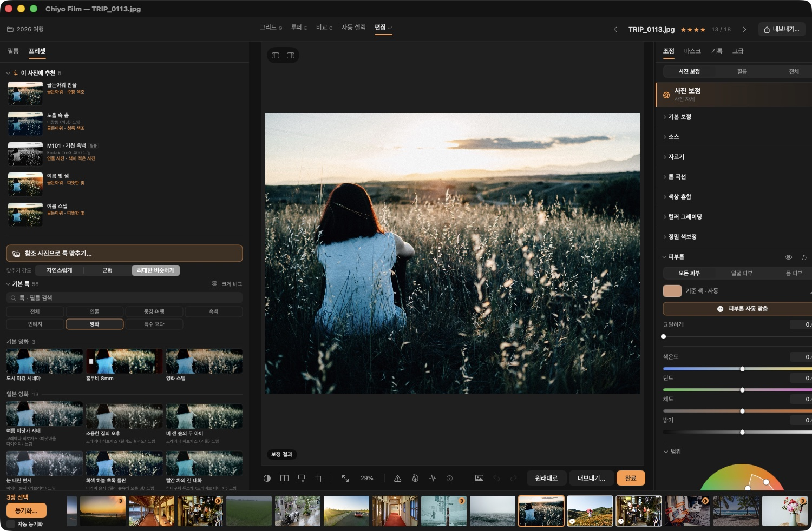
Select several photos in the editor's filmstrip: ‘N selected · Sync… · Auto sync’ appears at the bottom left
Sync…: matches the other selected photos to this edit. Choose the parts (photo · skin · RAW Development · film and effects · crop · masks); by default everything except crop and masks.
Auto sync: while on, every slider you move here goes onto all selected photos at once.
Copy / Paste edit and Apply previous edit (the edit of the photo you just worked on): each photo keeps its own crop, masks and face regions.
Virtual copy (⌘'): another edit of the same photo without duplicating the file. It shows with a ‘Copy 1’ badge, has its own rating, flag and edit, and exports with a name like DSC09158-Copy1.
Match Set (1.8)
Select 2 or more photos of the same place and day and click Match Set in the library toolbar (or right-click › Match set to this photo…). The current photo is the reference; click another at the top to change it.
What to match: Exposure (mid brightness) · White balance (from grey and white areas) · Skin colour (each photo's face measured; face skin only) · Contrast and saturation (off by default) · optionally the reference's film look. Strength from Gently to Exactly.
Check each photo's changes (e.g. “−0.1 EV · Temp +0.12 · Skin”) and the before/after previews, then Match N. Values go into Source (Exposure, Temperature, Tint), development contrast and vibrance, and Skin Tone (face skin) for later tweaking; ⌘Z undoes it all in one step.
Photos without enough grey or white skip white balance, and photos without a face skip skin, and say so. Very different scenes are better left unmatched.
RAW Development › Profile · chromatic aberration (1.8)
Like the camera JPEG: the camera's own JPEG brightness and colour (skin included), learned once per camera model from the JPEG inside its RAWs (up to 5 RAWs of that model spread over the folder; a few seconds the first time). The same for every brand.
Auto chromatic aberration: red/cyan and blue/yellow edge fringes measured on the photo itself and corrected — no lens data needed (manual and adapted lenses too); remembered. Off by default.
New cameras macOS can't open yet use the built-in converter (Fujifilm X-Trans included).
4. Virtual film rolls (new in 2.0)
Group several photos into a roll and print them like one real roll of film: the same film and development for every frame, frame numbers, slight frame-to-frame differences and a light leak on the first frames. Rolls live in the photo library (standalone app).
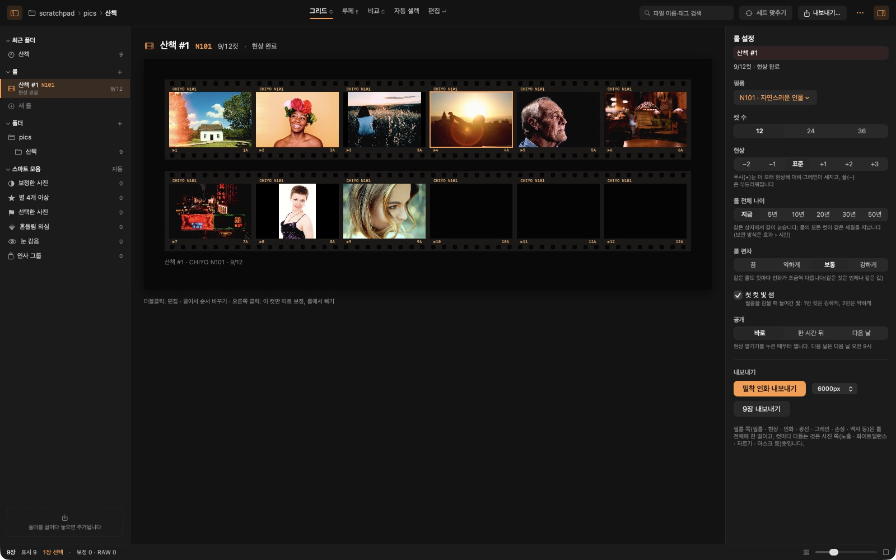
A roll's contact sheet: roll list on the left · contact sheet in the middle (frame numbers, first-frame light leak) · Roll settings on the right
Making a roll
Select photos in the grid and right-click › Put in roll › New roll…. To add to an existing roll, choose its name in the same menu. New roll at the bottom of the Rolls group in the left sidebar works too (with the selected photos, if any).
Click a roll to see its contact sheet in the middle: film strips on black paper, frame numbers and the edge print (“CHIYO N101 ▶12”). Double-click a frame to edit it; drag frames to reorder them.
Roll settings on the right: roll name, film (every frame changes with it), frames (12 · 24 · 36), development (push/pull), Roll variation (Off · Subtle · Normal · Strong), First-frame light leak, Age of the whole roll, Reveal (At once · In an hour · Next day).
If you add more photos than the roll holds, Chiyo Film offers to make a new roll with the same film.
How edits work in a roll
The film side (film · development · print · glow · grain · damage · frame and so on) exists once for the whole roll. Per frame you only refine the photo side (exposure · white balance · crop · masks and so on).
When you open a frame in the editor, the top bar reads like “Roll ‘name’ frame 12”, and the Film · Look · Effects menus belong to the roll. If you change something on the film side you choose Change the whole roll · Edit this frame on its own · Undo.
To make one frame different, right-click it on the contact sheet › Edit this frame on its own. It gets an ‘Own edit’ mark and can change everything, film included. Right-click › Follow the roll settings ties it back. Frame number, roll variation and light leak still follow the roll.
Take out of the roll and Delete roll leave the photos and their own edits as they are.
Roll effects
Roll variation: even within one roll each frame prints a little differently. A frame always gets the same values, so nothing changes when you reopen it.
First-frame light leak: the light that got in while loading the film — strong on frame 1, weaker on frame 2. If you turned on a light leak on that frame yourself, yours wins.
Age of the whole roll: every frame ages through the same years in the same box (chapter 11, Time travel; the storage is set under Effects › Time).
Delayed reveal (optional)
Set Reveal to In an hour or Next day (9 a.m. the next day) and press Hand in for developing: until then the contact sheet stays dark and the frames can't be opened. The original photos stay visible in the grid. Right-click › Finish developing now if you don't want to wait.
Exporting a roll
Export contact sheet: the whole roll as one image (long edge 6000 px by default, or 3000 px). Frames not yet revealed are blank.
Export N photos: every frame with its final settings, named ‘RollName_01.jpg’ …
The roll is stored in the folder's .chiyo-rolls.json. Each frame's photo-side edit stays in that photo's .chiyo file as before.
5. Export
Press ⌘E or Export… in the grid, loupe or editor. In the editor the export button in the top bar opens the sheet over the editor. For rolls, use Export contact sheet · Export N photos in the roll settings (chapter 4).
Choose the scope at the top: Selected · Picks · All shown. ‘Export N picks…’ under the loupe sends the photos flagged Pick right away.
What are the photos for? Web / social JPEG · Print TIFF 16-bit · Instagram 4:5 · Original size · To Photoshop (PSD), plus ‘Save current settings as preset’.
Format (JPEG · HEIC · TIFF · PSD), size (long edge · short edge · % · original, never enlarging small photos), destination (default: a ‘Chiyo 내보내기’ folder inside the photo's folder).
Details: quality (with estimated size per photo and in total) · colour space · output sharpening · include frame / date stamp · metadata · file name template · subfolders · name conflicts.
Exports run in a background queue (pause, cancel) and are saved as separate files; originals stay as they are.
Copy / move originals tab: copies or moves the files as they are (with RAW+JPG pairs, .chiyo and .xmp) for delivery or backup.
6. The editor window (2.0)
Center: the photo with the floating tools on its left · Right: the menu panel (Film › Simple) · Far right: the menu rail
Area
What it holds
Menu rail (far right)
Adjust · Film · Look · Effects · Masks · Frame, with History · Advanced at the bottom. ⌘1–⌘6 jump straight to a menu. A menu with something changed from its defaults gets an orange dot, and the menu you chose is remembered. Clicking the current menu again hides or shows the panel (F).
Menu panel
Next to the title: Reset (↺), Find a control (🔍) and Simple · Detailed. Drag the edge to resize it; double-click it for the default width.
Photo
Zoom and pan with the trackpad; double-click for fit ↔ 100%. Floating tools on the left of the photo: Eyedropper (pick white balance · skin reference colour · colour range on the photo), Crop (R), Before / after (split · side by side · before).
Bottom right of the photo
A small bar: zoom level, clipping warnings, Scopes (Histogram · Waveform · RGB Parade), help.
Top bar
Center: file name with the film code and description (for a roll frame, “Roll ‘name’ frame 12”). Right: undo · redo, Before / after, Revert, and — when opened from Photoshop or Lightroom — Cancel (Esc) · Apply (Return). When opened from the library, the left has a Library · Rolls · Edit switch and the right has Saved · Export · Revert · Done (edits are saved automatically in the .chiyo file next to the photo).
Filmstrip at the bottom
Only when opened from the library. For a roll frame it shows the roll's frames and numbers.
Simple · Detailed
Simple shows a few of the menu's most used controls; Detailed shows every section of the menu (all the controls of the 1.x Adjust tab). Each menu remembers its own choice. The ‘Detailed · …’ row at the bottom of the simple view also opens the detailed view.
Long sections in the detailed view (Development · Print · Grain · Damage and so on) show the most used controls first; click ‘More · n’ for the rest (‘n changed’ when a folded control differs from its default).
In each section header, 👁 turns the section off briefly for comparison, ↺ resets that section only, ? opens help, and the lock keeps its values when you change presets or looks. Sections you have changed get an orange dot.
Each control is one row of name · slider · value. Sliders that move a colour (temperature, tint and so on) show that colour on the track; long explanations appear when you point at the name. Double-click a name or slider to return to the default.
Reset ↺
The ↺ next to the panel title of Adjust · Film · Effects · Masks · Frame returns that whole menu to its defaults (one undo step).
Adjust: the photo-side controls (exposure · colour · curves · color mixer · grading · skin · detail · lens corrections · RAW Development). The crop stays.
Film: keeps the chosen film and returns film strength · fade · development · print and the print medium to that film's defaults.
Effects: grain · glow · diffusion filter · vignette · light leak · lens effects · damage · overscan · date stamp · print texture back to the film's defaults.
Masks: deletes all masks of this photo (after asking). Frame: turns the frame and background off, leaving just the photo.
Find a control 🔍
Click 🔍 at the top of the panel and type a control or section name such as ‘grain’ or ‘vignette’. Matching controls from any menu are gathered so you can use them right there. With several words, only controls matching all of them are shown.
Scopes
Where the R, G and B traces overlap you see yellow, cyan, magenta and white. The white line is luminance.
The left and right triangles show the share of crushed shadows and blown highlights. Click them to show the clipped areas on the photo.
Hover over the photo to read the values at that point. You can switch between Linear and Log, and between large and small.
7. The Adjust menu (photo)
This is where you refine the photo itself. The order is the same as in Lightroom, and the film receives the photo as you have refined it. You can fix a photo here without choosing a film at all.
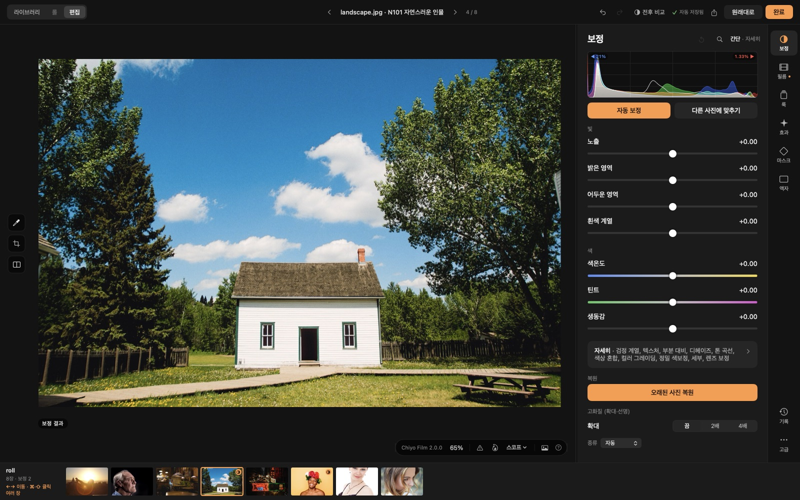
Adjust › Simple: histogram with clipping triangles, Auto adjust, Light · Color, Restore old photo
Simple
Histogram at the top. The left and right triangles show crushed shadows and blown highlights; click them to mark the clipped areas on the photo.
Auto adjust: sets this photo's brightness · white balance · highlights and shadows from its histogram. The film is left alone, and one undo reverts it.
Match another photo (when opened from the library): matches brightness · white balance · skin colour to another photo you ⌘-click in the filmstrip (the reference; see ‘Match a set’ in chapter 3).
RAW: for a RAW photo, a row at the top sums up white balance and highlight recovery; click it to jump to RAW Development in the detailed view.
RAW photos only. Exposure · white balance · highlight recovery · shadows · noise, Profile, auto chromatic aberration, Camera spectral (chapter 13)
Source
Exposure EV, Temperature, Tint
Crop
See chapter 15
Tone Curve
All, Red, Green, Blue and Luminance channels (Luminance changes only brightness and leaves hue and saturation alone, so adding contrast doesn't make colors heavier). Click the curve to add a point, drag to adjust, drag it off or double-click to delete. The curve applies to the final result after the film.
Color Mixer
Hue, saturation and luminance for 8 colors: red, orange, yellow, green, aqua, blue, purple, magenta. One color at a time (pick a swatch) or ‘Show all’ (24 sliders)
Color Grading
Shadows, midtones, highlights and global color wheels with luminance, Blending and Balance. Click a wheel or drag its point; hold ⇧ while dragging for fine control; double-click to reset
Precision Color
Lift, Gamma, Gain and Offset color wheels with luminance. Five curves: Hue vs Hue, Hue vs Sat, Hue vs Lum, Lum vs Sat, Sat vs Sat (use the Eyedropper to place a point on a color in the photo)
Skin Tone
All skin, Face skin and Body skin tabs; a reference color (Auto or Eyedropper); Uniformity; Temperature, Tint, Saturation and Luminance. Open ‘Range’ to drag the range of colors and the reference point on a color wheel
Detail
Sharpening; luminance and color noise reduction (detail, contrast, smoothness)
Skin Retouch
Finds the face, eyes, eyebrows and lips and works on skin only: Blemish removal (moles are kept unless you turn on ‘Remove moles too’; Protect brush), Dark circles, Even skin (+ texture), Contouring, Include neck, and Size. Pores, sheen, light and shadow are left untouched
Lens Corrections
Distortion (barrel/pincushion, edges filled automatically), Vignetting with midpoint, Defringe
Restore
Every control of Restore old photo, the damage brush, B&W colourisation and upscaling (chapter 12)
Color Grading in the ‘Single’ view
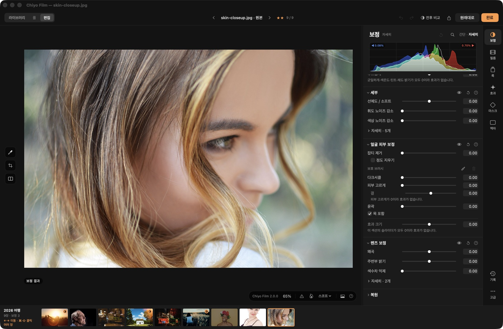
Skin Retouch: every slider starts at 0. Blemish removal around 40–60 and Even skin around 30–50 look natural
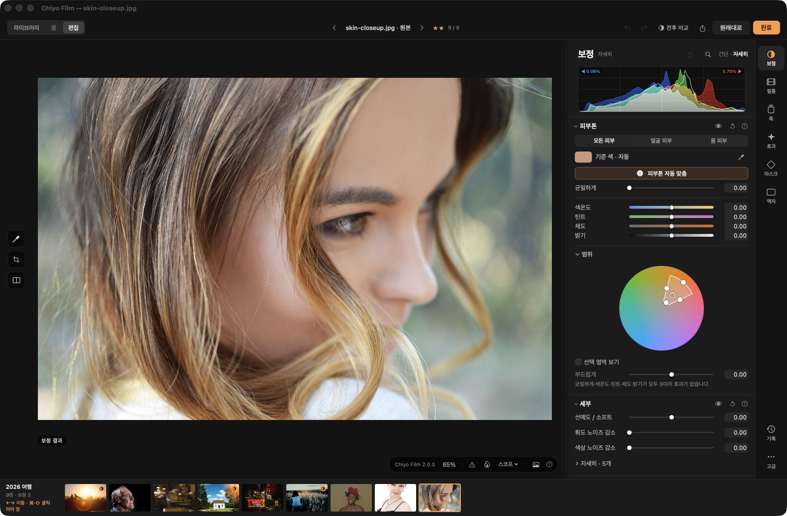
Skin Tone: Uniformity with Temperature, Tint, Saturation and Luminance, and the ‘Range’ color wheel below
Speed Edit: hold Q Exposure · W Contrast · E Saturation · A Highlights · D Shadows · T Temperature and scroll or drag sideways to adjust without hunting for the slider (⇧ for fine steps).
8. The Film menu (film → development → print)
From choosing the film to developing and printing it. The three steps Film → Development → Print at the top of the simple view each bring up that step's controls below. You don't have to go in order.
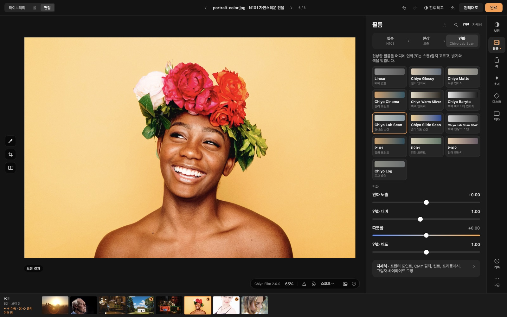
Film › Print: print medium cards with Print exposure · contrast · saturation · warmth
Page
What it holds
Film
Six film cards (the current film, picks for this photo, favorites). All films 154 › opens the full list inside the panel. Controls: Film strength, Fade, Warmth, Texture.
Development
Push / pull, development contrast, saturation, Color boost. Detailed: film exposure, bleach bypass, base fog, development gamma, compression and levels.
Print
Print medium cards (what the film is printed on or scanned with), Print exposure · contrast · saturation, Warmth (shadow, midtone and highlight toning of the print together). Detailed: printer points, CMY filters, tint, preflash, shadow and highlight shape.
Choosing a film
The thumbnails on the cards and in the list are rendered from the photo you have open. Click one to apply it instantly. ↑↓ step through the films.
Film names: each film is shown with Chiyo Film's own code and a description (for example N101 · Natural portrait). The small grey line in the list (for example “Kodak Portra 400 feel”) only tells you which film served as the reference; Chiyo Film is not affiliated with any film manufacturer. The first letter of the code is the type (N color negative · S slide · M black and white · C cinema film · I instant · X cross process · E experimental), and the first digit is the family.
All films: By type (how they render color) and By family (films with the same roots), collapsible sections, search (code, description or reference film name, for example portra, natural portrait, N101; Korean names work too), ★ favorites only, and Large / Grid / List views.
Original (no film) removes the film color and applies only your photo adjustments.
Choosing a film also loads that film's grain, halation, bloom and highlight compression, plus its recommended print medium. Add or subtract from those values as you like. A slider's ↺ or a double-click returns it to the film's value.
Detailed
Section
What it does
Film
Color science (Spectral · Classic), B&W filter (a lens filter in front of B&W film), Overall amount, Film strength, Film aging (expired film) and its color shift, Protect skin tones, Film format (half frame · 35mm · 6×4.5 · 6×6 · 6×7 · 6×9 · 4×5 — the larger the format, the finer the grain and the smaller the glow)
Development · Compression · Levels
Film exposure (EV), Development contrast, saturation, Base fog, Development gamma, color separation, Color boost, Push/Pull (stops), Bleach bypass · Negative (creative) / Highlight compression / black and white points
Print
Print medium (lab scan color and B&W, slide scan, papers Glossy · Matte · Warm Silver, measured print film and paper models P101 · P102 · P201, Chiyo Baryta, Chiyo Log and more), print contrast, exposure and saturation, toning and tint, CMY filters, Printer points R·G·B·Gang (1 point = 1/12 stop), Preflash, print shadow and highlight shape, print push/pull, Bleach bypass · Print, Paper grade (−1 to 5 on B&W papers)
Film exposure vs. Push/Pull: ‘Film exposure (EV)’ in Detailed › Development changes exposure only (formerly Push / Pull, below the film list in 1.x), while ‘Push/Pull’ changes the development time, so contrast and grain change too.
Spectral color science
Color science: Spectral · Classic at the top of Film › Detailed › Film chooses how the film takes in color.
Spectral: the photo's light is received through the per-layer spectral sensitivities from the film datasheet (including the overlap between layers and interlayer effects). Deep reds and skin come out cleaner and less muddy. Colors don't get stronger — they move in a direction closer to real film; greys and exposure are identical in both modes. RAW photos also use the camera sensor's spectral sensitivity (chapter 13).
When a negative is printed on the measured print media P101 · Print film (Kodak Vision 2383 feel) or P102 · Color paper (Kodak Endura feel), the print colors are computed spectrally too.
It applies to 92 color films. Black-and-white and creative films are unchanged.
Newly opened photos, choosing a film, built-in looks, Picks for this photo and look matching start in Spectral. Edits and presets saved before 1.6.0 open in Classic and render exactly as before.
Black-and-white
Spectral sensitivity: B&W films set their brightness from the film's real spectral sensitivity. Classes: panchromatic (most), cine, orthochromatic (red-blind: red lips and clothes go dark), extended red, and blue-only (wet plate).
B&W filter (Detailed › Film): none · yellow #8 · deep yellow #15 · orange #21 · red #25 · deep red #29 · green #58 · blue #47 · Classic (up to 1.8). Yellow is close to what the eye sees; orange and red darken skies and lighten and smooth skin; green lightens foliage and deepens lips; blue lightens skies and darkens reds. The filter factor is compensated automatically.
Paper grade (Detailed › Print): with a B&W paper (Warm Silver · Baryta), grade −1 to 5: 0–1 soft, 2 normal, 3–5 hard.
To soften the film look: lower Film strength or Detailed › Film › Overall amount. If a portrait is too bright: lower Adjust › Highlights, or bring Film › Print › Print exposure down slightly.
9. The Look menu (picks · built-in looks · my presets · look matching)
Picks for this photo
When you open a photo, the ‘Picks for this photo’ row at the top of the Look menu suggests 3–5 looks that suit it, each with a thumbnail rendered from your photo and a short reason (for example “Snow scene · Cool light”).
The picks weigh the photo's colors and the scene and mood most heavily, add result quality and the looks you use often, and choose looks with different moods. The analysis runs only on this Mac. Click a pick to apply it; ⌘Z undoes it.
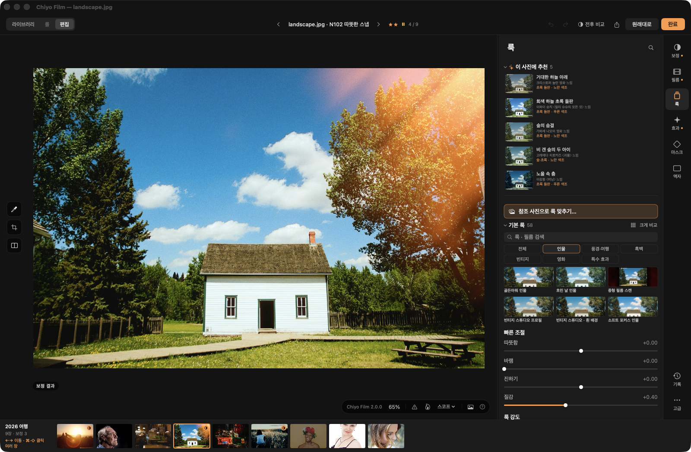
Picks for this photo (CC0 photo)
Cinema looks (Built-in look › Cinema)
30 looks that follow the mood of a film scene: Classic Cinema 3 · Japanese Cinema 13 · Korean Cinema 6 · World Cinema 11. Each card shows a mood name and a small “feel” line.
Search by director, film or cinematographer (for example Kore-eda, Love Letter, Wong Kar-wai, Parasite, Look Back).
Each look is an interpretation based on publicly available cinematography information and measured scene colors. The looks are not affiliated with or endorsed by the directors or studios, and the app contains no film stills.
Letterboxing is chosen separately under Frame › Cinema (CinemaScope 2.39 · Vista 1.85 · Subtitled Scene).
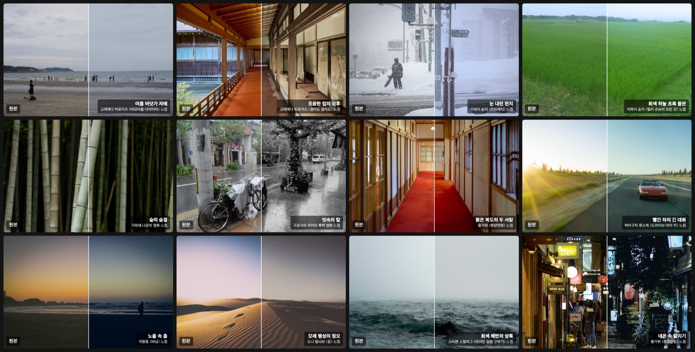
Cinema look examples (CC0 photos) — left original · right look
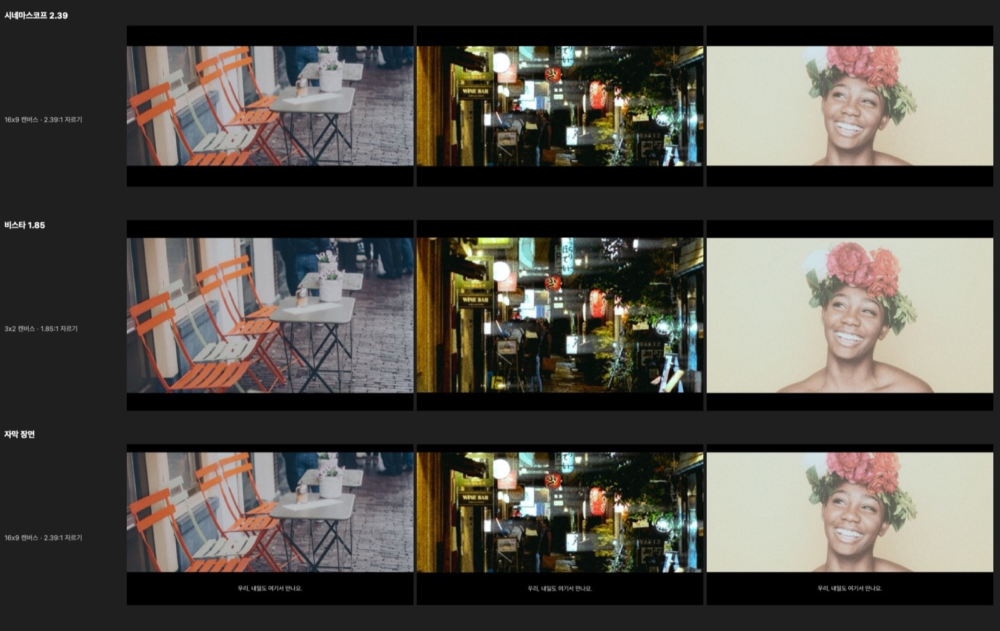
CinemaScope 2.39 · Vista 1.85 · Subtitled Scene
Built-in looks · My presets · Matching a reference photo
Match look to reference photo and the built-in looks
Built-in look (28): Golden Hour Portrait, City Night Cinema, Vintage Slide, Documentary B&W and more, grouped as Portrait, Landscape & Travel, B&W, Vintage, Cinema and Creative.
My presets: save the current settings under a name. Favorite, search, rename, export and import.
Match look to reference photo: pick a photo you like and Chiyo Film finds and applies the film and settings closest to its color, tonality and grain. You can choose among 4 candidate films; the reference photo is shown small at the bottom left of the preview. The light and the scene itself can't be transferred; the color and tonal mood can.
Match strength (2.0): shown once you have matched a reference photo. Natural (keeps your photo's character) · Balanced · Closest (as similar as possible). Since 2.0 the tone curve and color grading are transferred too, so the three levels are clearly different. Switching applies instantly, with no recalculation.
Copy and paste settings: ⇧⌘C / ⇧⌘V (⌥⇧⌘V to include masks). When you reopen the same photo, you can load its previous edit.
10. The Effects menu
The light and texture that film and lenses add. The simple view is 12 cards: Grain · Halation · Bloom · Diffusion Filter · Vignette · Light Leak · Lens effects · Dust · scratches · Overscan · Date Stamp · Print Texture · Time.
Each card shows the name, its main value (‘Off’ when off) and a strength bar. Drag the bar to set the strength right on the card. Cards that are on get an orange border.
Click a card (an effect that is off is turned on at a sensible strength) to show 2–3 of its controls and ‘Detailed’ below.
The detailed view holds every effect section.
Section
What it does
Glow
Bloom · Halation · Diffusion · Motion · Streak styles. Choosing a style shows only Amount, Range, Spread and Warmth (+ direction and softness); the rest is under ‘Detail’
Diffusion Filter
Black Mist (halo around highlights, blacks stay black) · White Mist (milky veil) · Glimmer · Cine Bloom. Amount, size and halo warmth. Masks can exclude people or apply it to part of the photo
Grain
Amount, Grain size, color, Film resolution, shadow/midtone/highlight grain. The ‘Measured’ grain model sets the grain for each film from datasheet granularity
Optics & Lens Effects
Edge blur, Veiling flare, Film resolving power, Add chromatic aberration, Coma
Finishing · Light Leak · Damage
Vignette, light leaks (‘Position & direction on photo’: the centre line sets where the light enters, the round knob its direction, the outer line its reach; ‘Width’ for the sideways spread), dust, fibres, scratches and stains
Overscan · Print Texture · Date Stamp
Film edges and sprocket holes (edge print “CHIYO N101 ▶12”), halftone and paper texture, Date Stamp (type the date in one field: 19981113, 98 11 13, 1998.11.13 and so on; calendar, Capture date and Today buttons)
Time
See chapter 11
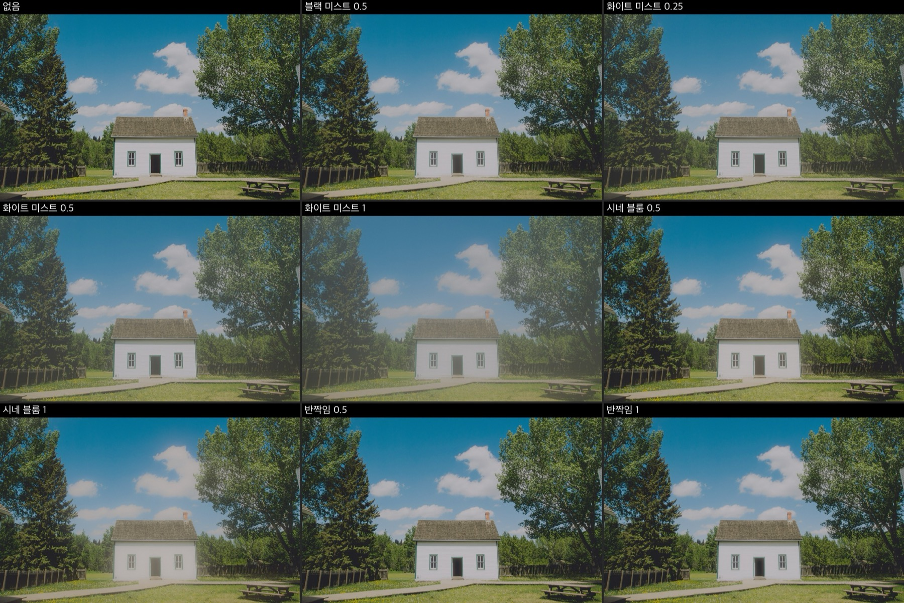
Diffusion Filter: none · Black Mist · White Mist 0.25/0.5/1 · Cine Bloom · Glimmer
11. Time travel (new in 2.0)
Shows how a print fades over the years. Unlike ‘Film aging’ (Film › Detailed: shooting on expired film), this is what happens after printing. Turn it on with the Time card in the Effects menu.
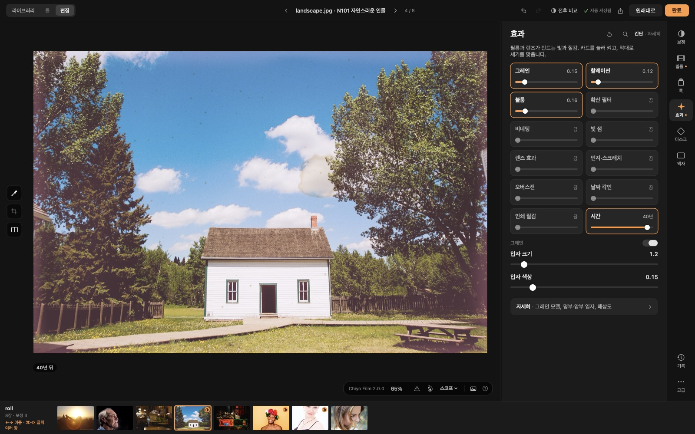
Effects › Simple: 12 cards, with the ‘Time’ card at 40 years (in a drawer) — ‘40 years later’ under the photo
Age: now to 50 years. The marks 0 · 5 · 10 · 20 · 30 · 50 years are evenly spaced, so the early years are easy to set finely. Double-click for ‘now’.
Storage: In an album (dark) · Framed by a window (light) · In a drawer (damp) · Original film (the slide or negative itself, in its box).
Stains · foxing (0 = a clean fade only) and Faded edges.
A line under the card says which medium the fading is computed for (for example “P102 … ”). Each print medium fades its own way:
Color paper: in the dark the cyan dye goes first, so the print turns red and the white base yellows.
Print film: cyan and yellow fade, so it leans magenta and pink.
Slide: cyan fades, so it warms while density and contrast last; by a window yellow and magenta fade and it turns pale cyan.
B&W paper: the dark areas brown, silver mirroring appears at the edges of the darkest areas, and the paper yellows.
With no print medium (Linear), color paper (or B&W paper for B&W film) is used.
Turn on Before / after to compare ‘print now ↔ N years later’.
In a roll, Age of the whole roll in the roll settings ages every frame together (chapter 4).
Time travel comes after the print medium and before the frame. It is a simulation that follows the published order of dye stability, not a conservation study.
12. Restore (new in 2.0)
The opposite of time travel: brings back faded colour and repairs damage in scans of old photos. Use Restore old photo in the Adjust menu's simple view, or Adjust › Detailed › Restore.
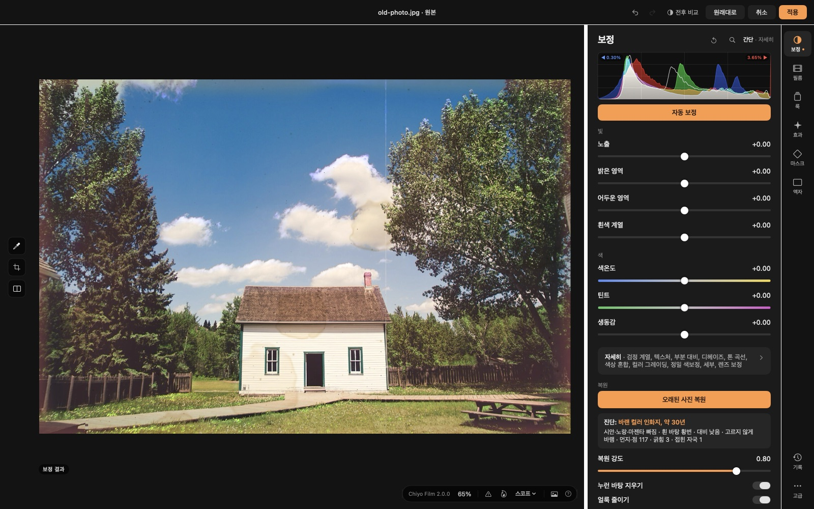
Restore old photo: the diagnosis line and strength, then yellowed base · stains · damage · halftone · sharpen
Click Restore old photo. Chiyo Film examines the photo and shows a diagnosis (for example “Diagnosis: faded colour paper, about 30 years · cyan lost · yellowed white base · dust and specks 12”), finds the medium, how faded it is and the damage, and sets the restore values. One undo reverts it.
Each step can be turned on and off:
Restore strength: how far to restore.
Remove yellowed base · Reduce stains.
Remove damage: dust and specks, scratches, creases, torn corners. Show damage found marks what will be fixed in red; Sensitivity sets how much is found.
Remove halftone: the dot pattern you get when scanning a printed photo.
Sharpen: crisper soft scans without halos, with a separate amount for faces.
Type: Auto (compares them all) · Colour print · Slide · Cinema film · B&W.
Restore is a photo-side adjustment before the film, so you can add a film or time travel again afterwards.
A photo that isn't faded, or a deliberate sepia tone, keeps its colours; only the damage is fixed (“Hardly any fading — repairing damage only”).
The ‘about N years’ in the diagnosis describes how faded the photo is, not its real age. Scenes with very strong colours (a yellow wall, a sunset) may be skipped as not faded.
Damage brush
Turn on the Damage brush in Detailed › Restore and paint on the photo. Add to removal paints away scratches and specks that were missed; Keep protects places found by mistake (a catchlight in an eye, a pattern). On the photo: red = damage found · blue = damage painted · yellow hatching = kept. Hold ⌥ for the opposite mode, [] for size, Esc to finish; ‘Clear strokes’ removes what you painted.
Colourise B&W
Adds colour to a black-and-white photo with a learned model (DDColor). Click Add colour and set the Strength. Brightness stays as it is; only colour is added.
The colours are the model's plausible guess, not the real colours. Keep that in mind for photos of record.
After changing the restore, Colourise again runs the model again on the photo as it is now (after restoring).
Upscale (2× · 4×)
Enlarges the photo 2× or 4× with a learned model (Real-ESRGAN), cleaning up noise and adding detail. Because it is heavy, it runs only when you apply or export; the panel previews the middle of the photo, upscaled at 1:1.
Not available for photos opened from Photoshop in this beta (the document size can't change). It works in the library and from Lightroom.
The learned models are included in the installer, so the 2.0 installer is about 224 MB. The models run only on this Mac and never send your photos anywhere.
13. Camera spectral (2.0, RAW only)
When a colour film is applied to a RAW photo, the exposure of the film layers is computed from the camera sensor's spectral sensitivity instead of a spectrum guessed from sRGB. Film colours become more accurate for skin under mixed light, foliage, highly saturated colours and LED or sodium lights.
Turn it on and off with Camera spectral in Adjust › Detailed › RAW Development. Next to it you see the camera name with measured or estimated:
Measured: cameras with published measurements (52 cameras, AMPAS rawtoaces-data — Canon · Fujifilm · Nikon · Sony and others).
Estimated: other cameras (for example the α7R VI). The spectral sensitivity is estimated from the colour matrices in the RAW, the same way for every brand.
None: the camera couldn't be read from this RAW.
A newly opened RAW starts with it on when data is available; edits saved earlier open the way they were saved.
JPEG and TIFF photos, and photos sent from Photoshop or Lightroom, already have their colours rendered, so they keep using Spectral color science as before. B&W films don't use it either.
14. Masks
Apply different exposure, colour and effects to part of the photo. You can have up to 6 layers.
Simple: new-mask buttons People · Sky · Background · Linear · Radial · Brush, with Subject · Luminance range · Color range under ‘Other kinds ›’. Below: this photo's masks (name and a one-line summary of what changed) and Exposure · Warmth · Saturation for the selected mask. The overlay shows the mask in the simple view too (O).
Detailed: shapes (Radial, Linear, Luminance range, Brush, Color range), automatic (Subject, People, Sky), combining (Add · Subtract · Intersect), range refinement, edges, excluding film effects.
Draw radial and linear masks by dragging on the photo, then use the handles to change position, size, rotation and feather; grabbing anywhere in the wide inner area moves them. The brush has size, feather and flow; hold ⌥ to erase.
Photo adjustments: each layer can have its own Highlights and Shadows, Whites and Blacks, Texture, Clarity, Dehaze, Vibrance, luminance noise reduction and color.
Automatic masks are recalculated for each photo in Lightroom batch rendering and Apply to multiple photos. The overlay hides briefly while you move a slider.
Masks stay in place on the photo regardless of cropping and rotation.
15. Crop · Rotate · Straighten
Press R or the Crop button among the floating tools left of the photo to enter crop mode. The whole photo is shown with the crop area (rule-of-thirds grid) on top. Return or ‘Done’ applies it; Esc or ‘Cancel’ reverts.
The cursor tells you what will happen: diagonal arrows at the corners (resize), left-right or up-down arrows on the edges, a hand inside (drag to move the photo), and a rotate arrow outside (drag to rotate the photo). You can also grab the margins above and below the photo or just outside a corner.
While rotating, the crop rectangle stays upright on screen and the photo turns underneath it (the same as in Lightroom and Photoshop). A fine grid appears inside the rectangle while you rotate.
Ratios: Original, Free, 1:1, 4:5, 5:4, 2:3, 3:2, 16:9, 9:16, 65:24 panorama, 6:7 medium format, plus a portrait/landscape swap.
Straighten: turn on the Straighten tool in the bar and draw a line along a horizon (or a vertical post); the photo rotates so that line is level (or plumb). Set the angle directly with the slider (−45° to 45°), or use Auto straighten (⇧A) to find horizons and building lines. The photo is cropped automatically so no empty corners appear.
There are also buttons for 90° rotation and horizontal/vertical flips.
Grain size, vignette, glow, film edges and the like are scaled as if the cropped photo had been shot at that size. Saving writes the cropped size.
In Photoshop the document changes to the cropped size, but the cropped parts of the original layer are hidden, not deleted (restore them with Image › Reveal All; a single ⌘Z undoes everything).
Because crops differ from photo to photo, they are not included in presets, pasted settings or batch rendering by default (choose ‘Include crop’ to apply them too).
16. Frames · Backgrounds · Multi-photo layouts
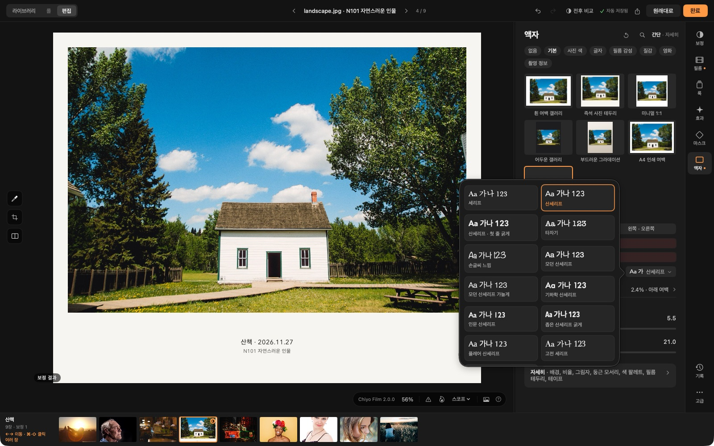
Frame › Simple: group chips and tiles, text edited in place, font samples (23 fonts)
The Frame menu (⌘6) places the finished photo on a larger canvas. The photo itself is unchanged, and no film effects are applied to the margins or background.
Simple: group chips (None · Basic · Color · Text · Film · Texture · Cinema · Shooting info) and frame tiles drawn with your current photo; below them you edit the text right there (layout, first and second line, font, text size · colour · position) and set the margin and bottom margin. Detailed holds every control: background, ratio, shadow, rounded corners, colour palette, film border, tape and so on.
Shooting info (1.10): Strap · One-line info · Two-line info · Shot on camera · Film info (dark) · Poster · CinemaScope info · Dark two-line. They write the camera, lens, focal length, aperture, shutter speed and ISO from the photo's EXIF (text only, no logos); a photo without that data leaves the place empty.
Colors taken from the photo: a Color Palette that places 3–6 of the photo's colors in the margin (color codes optional), a background painted in a photo color (lighter, darker, complementary, midtone), an Aurora background that blends photo colors, and a Duotone blur in two colors.
Text: up to two lines in the margin. Type your own text or use the tokens {date} (date stamp → capture date → today, in that order), {film}, {code}, {desc} and the shooting data {camera} {lens} {exif} (e.g. 35mm f/1.8 1/250s ISO200), {focal} {aperture} {shutter} {iso}; the ‘Left · right’ layout puts lines 1–2 at the photo's left edge and two more lines at its right edge; the Korean tokens {날짜} {필름} {코드} {설명} work too, and in the English interface {film} and {desc} use the English description. Size, letter spacing, color, alignment and position. If the text needs more room, the canvas grows to fit.
23 fonts (2.0): click the font button to choose from ‘Aa 가나 123’ samples (serif, sans serif, first line bold, typewriter, handwritten, modern, geometric and humanist sans, classic serif and more). Korean text uses a Korean font of the same character. Text in the editor stays sharp at any zoom.
Film: 35mm Film Strip, Contact sheet (red grease-pencil marks), torn-paper edges, masking tape or clips, dust and light leaks on the background. ‘Variation’ changes the shapes.
Texture backgrounds: paper, linen and canvas, plus Fiber paper, Concrete, Coarse linen, Wood grain and Marble.
Manual controls: canvas ratio (Margin only, Original, 1:1, 4:5, 3:4, 9:16, 16:9, 2:3, 3:2, A4), margin and bottom margin, position, background, Shadow, Rounded corners and Border. The controls are arranged in collapsible groups.
Saving keeps the photo's resolution and enlarges the canvas. Frames are included in presets and batch rendering by default (uncheck ‘Include frame & background’ to leave them out). When applied to several photos, {date} uses each photo's own capture date. In Photoshop only the canvas is enlarged and the original layer is left as is.
Multi-Photo Layout (2–4 photos on one canvas)
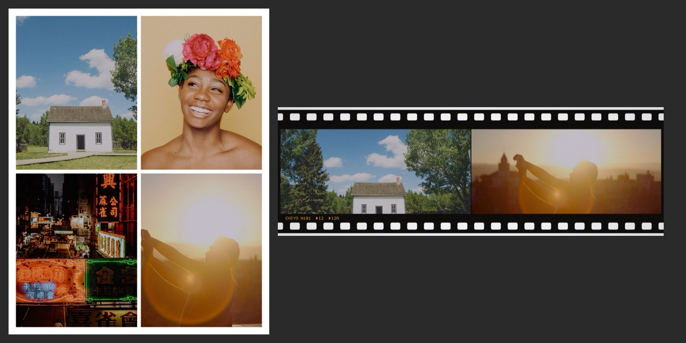
Grid of four (4:5) and a side-by-side layout with a film-strip frame
File › Create Multi-Photo Layout… (⇧⌘L). Add 1–3 more photos to the current one and arrange them in a new window. The editor window stays as it is.
9 layouts (Side by side, Stacked, large + small, rows or columns of three, Grid of four and more) plus Swipe strip (one photo per panel joined into a strip, Instagram-style). Ratios: Photo ratio, 1:1, 4:5, 9:16, 3:4, 2:3, 3:2, 16:9. Spacing between photos.
Edit per cell: Current edit, that photo's previous edit, Last edit, My presets, Built-in look, Original.
Drag a photo in the preview to position it, and pinch on the trackpad to scale it. Hold ⌥ and drag to another cell, or drag the photo cards below onto each other, to swap places.
Frame & Background (background, margins, shadow, color palette, text, film borders and so on) is applied once to the whole layout.
Export: long edge 1080–6000 px, JPEG · TIFF 16-bit · PNG · PSD 16-bit. A swipe strip saves both the joined image and one file per panel (name-1, name-2 …).
17. History · Advanced
The two menus at the bottom of the rail. History holds the edit history and snapshots; Advanced holds processing settings · multiple photos · LUT · settings files · language · problem reports.
History: every change is listed; click an entry to go back to that step. ⌘Z / ⇧⌘Z.
Snapshots: save the current state and compare against it.
Export as .cube: save the colors of the current look as a 3D LUT (65³, sRGB) for use in other software (Premiere, DaVinci Resolve, Final Cut and so on). Effects such as grain, glow and vignette, and masks, are not included.
Settings file: export and import settings as JSON.
Create Problem Report File: creates a text file with the version, environment and logs. If something goes wrong, please send this file (no photos are included).
언어 · Language
The whole editor (menus, panels, sliders, help, film and look names, dialogs) can be used in English or Korean. By default it follows macOS's preferred languages (English unless Korean comes first).
Choose Automatic · 한국어 · English under 언어 · Language at the top of the Advanced menu or in the app menu. The change takes effect the next time the editor opens; your current edit stays as is.
The Lightroom plug-in follows this setting, or Lightroom's own language if you haven't chosen one. The Photoshop menu command follows Photoshop's language.
Film and look search works in both English and Korean (for example “natural portrait”, “portra”, “자연스러운 인물”).
Changing the language doesn't change the rendered photos, settings or saved files.
The English interface: 언어 · Language at the top of Advanced (1.10 screen)
18. Applying to multiple photos at once
File › Apply to Multiple Photos… (⇧⌘B) or the button in the Advanced menu. Photos are processed right in the editor, without Lightroom.
Add photos or folders (drag and drop works). Settings: Current edit · Last edit · My presets · Built-in look.
Format: same as the original · TIFF 16-bit · JPEG (quality 92) · PSD. Location: next to the original (name-Chiyo, then -2, -3 … if the name is taken) or a folder you choose. Existing files are never overwritten.
Painted masks and crops are left out by default (check ‘Include’ to apply them), and automatic Subject, People and Sky masks are recalculated for each photo.
There is a progress bar and a Cancel button. Photos that can't be read are listed with the reason while the rest continue. When it's done, click ‘Show in Finder’.
19. Lightroom batch rendering
Select several photos and choose File › Plug-in Extras › Chiyo Film: Apply to Selected Photos…
Settings to apply: choose the editor's ‘Last edit’, a Built-in look, My presets, Quick film settings, or a settings JSON file.
By default the results are saved in the same folder as the original as name-Chiyo.tif (then -2, -3 … if the name is taken; nothing is overwritten) and are stacked above the original in the catalog so you see them right away.
Painted masks and crops are left out by default (they differ per photo; check ‘Include’ to apply them). Automatic Subject, People and Sky masks are recalculated for each photo.
When you open a photo through external editing, it is saved only when you click Apply (Return). Batch rendering adds results to a stack above the original when ‘Add to the Lightroom catalog’ is on. If it was off, bring the files in with File › Import Photos and Videos.
Will a PSD open if I chose PSD?
Yes. It is saved to the same file as a flat PSD without layers, and Lightroom reads it as is.
I get a message about “transparent areas”
It means the transparent areas were filled with white when the photo was opened. The result is saved as opaque.
Chiyo Film isn't in Photoshop's Plugins menu
Quit Photoshop completely (⌘Q) and open it again — required if it was running during the install.
Plugins › Manage Plugins… (opens the Creative Cloud app) › installed plug-ins: make sure Chiyo Film is On.
In the Chiyo Film app choose Help › Reinstall Photoshop Plug-in…. It reinstalls with Adobe's plug-in installer, or hands the plug-in to Creative Cloud (click “Install” when asked). Then restart Photoshop.
Still missing: in Finder press ⇧⌘G, go to /Library/Application Support/Chiyo Film/2.0.0/ and double-click chiyo-film-2.0.0-photoshop.ccx.
Photoshop plug-ins are installed through the Creative Cloud app, so nothing is installed if it is missing or signed out. The install log is /tmp/ChiyoFilm-install.log, also included in Advanced › Create Problem Report File.
“Edit In › Chiyo Film” isn't in Lightroom
Check “Lightroom Classic setup” in chapter 1 again. The usual cause is looking in the Presets tab — the preset menu is at the top of the Additional External Editor area on the External Editing tab. After choosing the application, “Save Current Settings as New Preset…” puts the name in the menu.
“Unidentified developer” warning
Right-click the installer in Finder › Open, or go to System Settings › Privacy & Security › Open Anyway.
Will my old edits change color after updating to 1.6.0?
No. Edits saved earlier open with ‘Classic’ color science and look exactly as before. To see them with the new method, set Film › Detailed › Film › Color science to ‘Spectral’.
Are the film colors identical to real film?
The films are expressive models tuned with reference to published characteristic curves, datasheets and scans. A color or grain match with real film is not guaranteed.
Film names and trademarks
Films are named with Chiyo Film's own codes and descriptions. Real film, manufacturer, director and movie names appear only as a “feel” reference (for example “Kodak Portra 400 feel”, “Kore-eda Hirokazu · Our Little Sister feel”) to describe what a look was modeled on. These names are trademarks or titles of their respective owners; Chiyo Film is not affiliated with, sponsored by or endorsed by any of them.
Will my edits change after updating to 2.0?
No. Edits and presets saved in 1.x open and render as before (new settings are read with the old behaviour). Only the screen changed to menus; every control of the old Adjust tab is in some menu's ‘Detailed’ view. If you can't find one, use 🔍 Find a control.
The film list on the left is gone
It moved into the Film menu (⌘2). Click All films 154 › under the film cards for the list By type / By family with search and favorites. ↑↓ still work.
Upscaling is off in Photoshop
A photo opened from Photoshop can't change the document size, so upscaling isn't available there in this beta. Open the photo in the library or from Lightroom instead. B&W colourisation and the other restore features work in Photoshop too.
Terms of use
This is a free test version for personal, non-commercial use. You may use the resulting photos freely; redistributing the program is not permitted. The full terms, including the warranty disclaimer and limitation of liability, are shown in the installer, in Chiyo Film.app/Contents/Resources/LICENSE.txt, and in LICENSE on the release page. An English translation is provided as LICENSE.en; it is for convenience only, and the Korean text (LICENSE) governs. Keep your original photos backed up separately while using the software.
Reporting a problem
Create a file with Advanced › Create Problem Report File and tell us which photo (format, bit depth, color space) and what you did. Please don't post personal photos in public places.